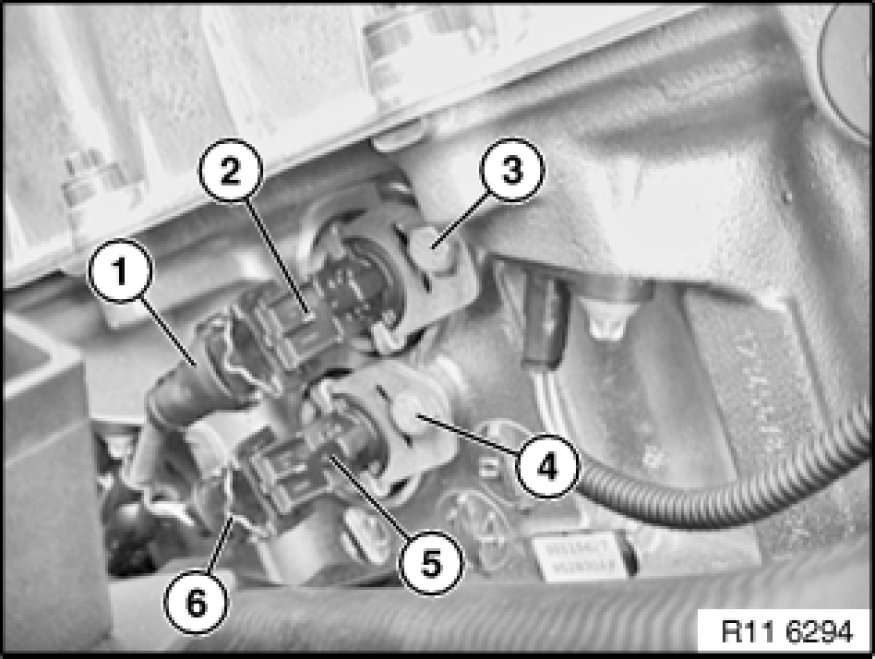

Variable Valve Timing Solenoid: Service and Repair
11 36 655 - Removing and installing/replacing both solenoid valves (N52K)

Important!
It is essential to observe conditions of absolute cleanliness when removing and installing the inlet and exhaust solenoid valves.
Possible malfunction if valves are contaminated:
- Rough running
- OBD fault entry
- Exhaust emission characteristics
- Low engine power

Necessary preliminary tasks:
- Remove ignition coil cover Removing and Installing/Replacing Ignition Coil Cover

Disconnect plug connection (1) on inlet solenoid valve (2).
Release screw (3).
Note:
Secure support and sealing ring against falling down.
Remove inlet solenoid valve (2) with bracket towards front.
Disconnect plug connection (6) on exhaust solenoid valve (5).
Release screw (4).
Note:
Secure support and sealing rings against falling down.
Remove exhaust solenoid valve (5) with bracket towards front.
Tightening torque 11 36 3AZ 11 36 Variable Camshaft Control VANOS.
Important!
Risk of mixing up plug connections (1 and 6).
Installation Note:
Replace support and sealing rings.

Assemble engine.
Check function of DME.